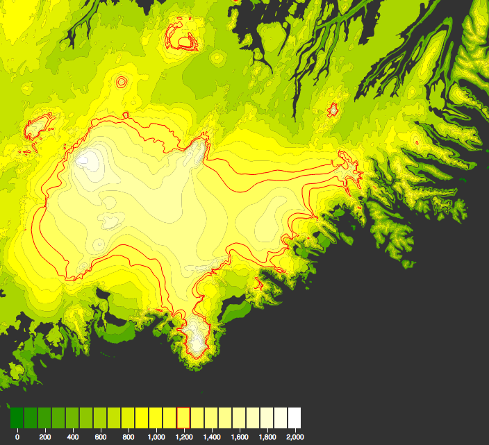
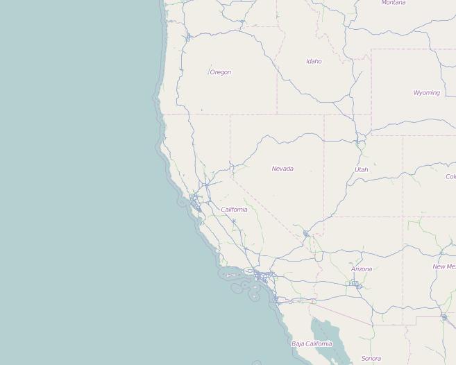

TUTORIALS
Jumpstart your map visualizations
Toggle navigation
Tutorials
Documentation
MAKE A MAP
Start here - get an interactive vector map with a few lines of code.
STYLE IT
Just use CSS to make the map look exactly how you want it.
DRAW YOUR GEOJSON
Add static geoJson files to the map with few more lines of code. Mapsense.js is built for vector data.
CREATE CHOROPLETHS
Create stunning choropleths that reflect a range of values in your data.

CRAFT YOUR VISUALIZATION
By accessing feature meta-data directly from map elements, you can easily make amazing, interactive visualizations.

RASTER IF YOU HAVE TO
Use map tiles from any source.
DISPLAY YOUR DATA
Easily map and style data from CSV and other files.
ANIMATE
Use custom D3 animations to pan the map around the world.